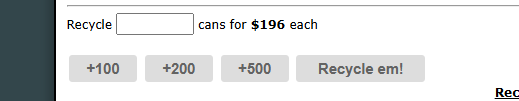

What does it do?
Normally, getting rid of cans involves typing numbers into input boxes. The Recycling Bin Helper eliminates that by injecting quick-click "Recycle All" buttons right next to the usual inputs.
Visual Example
Here's what the quick buttons look like in action:

How to use it
- Visit the Recycling Bin inside the City.
- Instead of manually entering the number of cans you wish to recycle, simply click the new Recycle All button.
- The script will instantly insert your maximum available cans and hit the submit button for you.